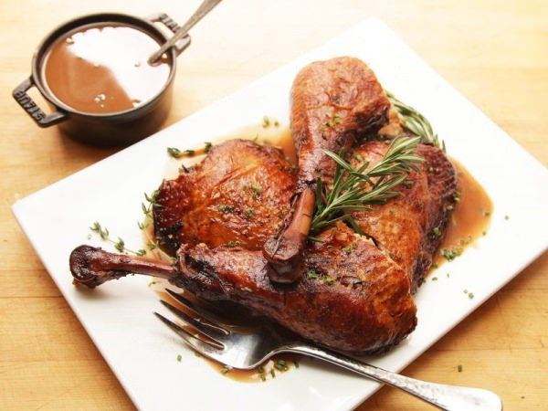

Запікаємо в гірчичному маринаді

Інгредієнти:
-
Гомілка і крило індички
-
2 ч. л. гострої гірчиці
-
2 ст. л. оливкової олії
-
Сіль
-
Мелений чорний перець
Рецепт приготування:
- Частини індички викладаються у форму, в якій планується їх запікати.
- В окремій мисочці змішуються залишилися компоненти. Можна за смаком додати до них роздавлений часник.
- Прямо у формі індичка натирається маринадом.
- Зверху продукти покриваються фольгою. Форма переміщається в гарячу духовку на півгодини.
Далі покриття знімається. Без фольги страва готується до зарум’янювання ще 20 хвилин.